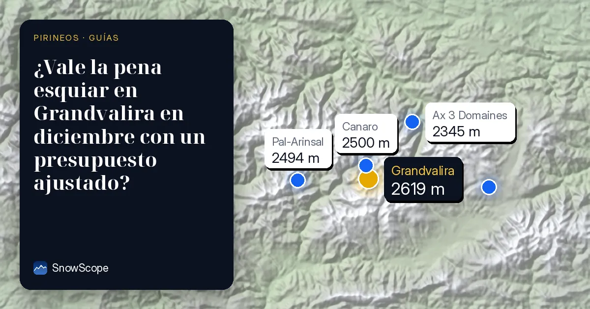

¿Vale la pena esquiar en Grandvalira en diciembre con un presupuesto ajustado?
Andorra tiene fama de esquí barato, así que ¿es Grandvalira una buena apuesta para diciembre? Nuestro histórico de nieve de 46 inviernos pasados (1980-81 a 2025-26) dice que la nieve natural en la base es escasa todo el mes y que principios de diciembre no es fiable. El viaje merece la pena a finales de diciembre, en la parte alta, con el forfait comprado online.
Consulta la previsión de nieve en tiempo real de Grandvalira en la app SnowScopeEspesor de nieve, alertas de nieve polvo y mapa 3D, gratis.
La promesa frente a las cifras de nieve
Grandvalira, en Andorra, es grande: la zona cartografiada tiene 137 km de pistas y 53 remontes entre 1674 m y 2619 m. Suena tranquilizador hasta que miras la nieve natural por altura en nuestro histórico. En la base de los remontes, a 1674 m, el espesor habitual en diciembre es de 9 cm; un diciembre flojo, 1 invierno de cada 10, está cerca de 0 cm, y uno generoso supera los 28 cm.
A media montaña, a 2146 m, la nieve habitual en diciembre es de 27 cm, oscilando desde menos de 2 cm en un invierno escaso de cada 10 hasta más de 63 cm en uno abundante. En la cima, a 2619 m, la profundidad habitual en diciembre es de 45 cm, desde menos de 5 cm en 1 de cada 10 inviernos hasta más de 101 cm en un invierno abundante de cada 10. La profundidad habitual el 15 de diciembre es de 8 cm en la base, 25 cm a media montaña y 42 cm en la cima.
El 13 de noviembre, la estimación de nieve de hoy es de 0 cm en las tres alturas, con 0 cm de nieve nueva previstos para los próximos 7 días en la base y a media montaña, y 3 cm en la cima. El rango de previsión de dos semanas hasta el 26 de noviembre para media montaña y cotas superiores es de 2 a 17 cm, con 10 cm en el punto medio, lo que muestra un comienzo de temporada lento.

Qué semana de diciembre te garantiza nieve
Las cuotas semana a semana muestran por qué principios de diciembre es una apuesta arriesgada para un esquiador precavido. En la base a 1674 m, la nieve alcanza los 30 cm o más solo en el 2 % de los inviernos pasados del 1 al 7 de diciembre y en el 7 % en cada una de las tres semanas siguientes, mientras que 50 cm o más ocurre en el 0 % durante todo el mes. A media montaña, a 2146 m, 30 cm o más se producen en el 30 %, 41 %, 50 % y 65 % de los inviernos pasados a lo largo de esas cuatro semanas.
La cima de los remontes a 2619 m es donde diciembre se vuelve fiable más adelante. Del 1 al 7 de diciembre, 30 cm o más aparecen en el 43 % de los inviernos pasados y 50 cm o más en el 28 %. Para el 8-14 de diciembre, esas cuotas suben al 57 % y 39 %, luego al 63 % y 48 % del 15 al 21 de diciembre, y al 76 % y 63 % del 22 al 28 de diciembre.
Lo que cuesta realmente el forfait
Para el lunes 14 de diciembre de 2026, la web oficial de Grandvalira lista un forfait de 1 día para adultos (18-64 años) comprado online a 62,50 EUR, mientras que el precio en taquilla para ese día es de 72,00 EUR. Los precios del forfait cambian según la fecha, por lo que consultar con antelación y comprar online marca una diferencia clara. No se comprobaron otros costes del viaje, por lo que un forfait más barato no garantiza por sí solo unas vacaciones de bajo coste.
Grandvalira comparado con Baqueira Beret
En España, el dominio esquiable de Baqueira Beret cuenta con 154 km de pistas y 36 remontes mapeados desde 1504 m hasta 2600 m. Sin embargo, Grandvalira tiene una mayor profundidad habitual de nieve natural en diciembre en toda la montaña. La profundidad habitual de diciembre en Baqueira Beret es de 8 cm en la base, 20 cm a media montaña a 2052 m y 30 cm en la cima a 2600 m. A media montaña, Baqueira alcanza 30 cm o más en el 22 %, 30 %, 35 % y 41 % de los inviernos pasados a lo largo de las cuatro semanas de diciembre. En la cima, alcanza 30 cm o más en el 39 %, 46 %, 52 % y 59 % de los inviernos pasados, y 50 cm o más en el 13 %, 22 %, 30 % y 37 %.
Para la temporada 2026-27, la web oficial de Baqueira Beret lista un Baqueira Ticket de 1 día para adultos a 74,00 €, un forfait de 1 día con la tarjeta recargable Baqueira Pass a 70,00 €, y un Baqueira Ticket de 6 días a 359,00 €. El precio de 1 día online de Grandvalira de 62,50 EUR para el 14 de diciembre es más bajo que las tarifas de 1 día de Baqueira Beret. Sin embargo, la tarifa de taquilla de 72,00 EUR de Grandvalira se sitúa entre ambas, y los precios de Grandvalira cambian según la fecha.
¿Son los diciembres recientes más escasos que los del pasado?
Comparando los primeros 15 inviernos (1980-81 a 1994-95) con los últimos 15 inviernos (2011-12 a 2025-26), la media de mediados de diciembre se mantuvo en 8 cm en la base, pasó de 21 cm a 25 cm a media montaña, y subió de 35 cm a 41 cm en la cima. Aun así, el diciembre del invierno pasado, 2025-26, estuvo por debajo de esa media reciente, con un promedio de 8 cm en la base, 19 cm a media montaña y 32 cm en la cima. Las oscilaciones año tras año siguen siendo grandes: 1989-90 cayó a 1 cm tanto a media montaña como en la cima, mientras que 1996-97 alcanzó 35 cm, 82 cm y 129 cm.
Consejos para esquiadores
- Apunta al 22-28 de diciembre si puedes, cuando la cima a 2619 m alcanza 30 cm o más en el 76 % de los inviernos pasados y 50 cm o más en el 63 %.
- Planifica tu esquí entre 2146 m y 2619 m, porque la base a 1674 m promedia solo 9 cm en un diciembre habitual.
- Reserva tu forfait en la web oficial de Grandvalira para pagar 62,50 EUR en lugar de 72,00 EUR para el 14 de diciembre, y comprueba los precios para tus fechas exactas.
- Consulta el boletín de aludes antes de cualquier actividad fuera de pista, especialmente cuando la capa de nieve de principios de diciembre es fina.
Más mapas (sitios externos)
Referencias y créditos
- Grandvalira, official ski pass booking (online price for 14 December 2026, read 2026-11-13) www.grandvalira.com/en/ski-pass/day
- Baqueira Beret, official prices (tarifas), season 26-27 www.baqueira.es/es/tarifas
- SnowScope, December snow at three heights and today's snow map snowscope.app/
Sobre estas cifras
Nieve actual y tendencia a dos semanas: previsiones de SnowScope (tendencia de ECMWF y GFS, un rango, no una promesa). Remontes y pistas: cartografía de OpenSkiMap. Precios: las páginas oficiales de abajo, consultadas el 2026-11-13; los precios pueden cambiar, compruébalos antes de reservar.
Boletines oficiales de aludes: Servei Meteorològic Nacional d'Andorra – Estat de la neu
Citar este informe
Para investigación, docencia o prensa: cifras y gráficos reutilizables libremente bajo CC BY 4.0 con esta cita.
SnowScope (2026), ¿Vale la pena esquiar en Grandvalira en diciembre con un presupuesto ajustado?, https://snowscope.app/blog/es/2026/11/grandvalira-andorra-december-ski-snow-reality-cost-2026.html, consultado el 2026-11-14
SnowScope (Atlas Labs). (2026, November 14). ¿Vale la pena esquiar en Grandvalira en diciembre con un presupuesto ajustado?. SnowScope snow reports. https://snowscope.app/blog/es/2026/11/grandvalira-andorra-december-ski-snow-reality-cost-2026.html
BibTeX
@misc{snowscope2026grandvaliraandorradecemb,
author = {{SnowScope (Atlas Labs)}},
title = {¿Vale la pena esquiar en Grandvalira en diciembre con un presupuesto ajustado?},
year = {2026},
month = nov,
howpublished = {\url{https://snowscope.app/blog/es/2026/11/grandvalira-andorra-december-ski-snow-reality-cost-2026.html}},
note = {Published 2026-11-14 13:29 UTC; accessed 2026-11-14}
}· CC BY 4.0 · Métodos, datos y herramientas →
Grandvalira: nieve y temperatura según la altura, este invierno vs el pasado (herramientas) →
Sigue Grandvalira
Gratis: un aviso cuando llega la nieve y la previsión cada mañana.
Más partes de nieve

Menos días de nieve en los 120 puntos estudiados en los Pirineos desde 1980-81, sobre todo por debajo de 1500 m: nuestra serie de 46 inviernos.

Nieve escasa menor de 10 cm en los Pirineos el 11 de noviembre. Lleva cantos afilados, chaqueta impermeable, casco. La mejor nieve en las pistas norte de mayor altitud.